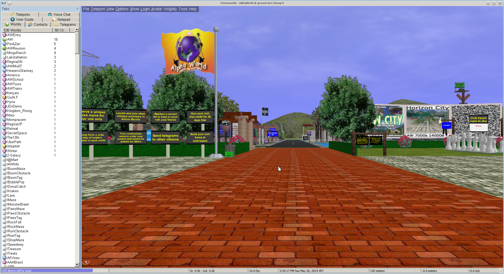

why it died and all the lessons learned along the way
Active Worlds is an early virtual world platform that allowed users to create and interact in 3D environments. It featured user-generated content, social interaction, and the ability to build structures. Active Worlds paved the way for user-driven creativity in virtual spaces and had a significant impact on the development of later virtual worlds.
Second Life is a virtual world and online platform that was created by the company Linden Lab. Launched in 2003, it is a 3D virtual environment where users, known as "residents," can interact with each other and the virtual world. Second Life is notable for its user-generated content, social interactions, and diverse range of activities.
Residents of Second Life have the ability to create and design their own content, including virtual objects, buildings, and landscapes. This has led to a rich and varied virtual environment with diverse architecture, landscapes, and interactive elements.
Decentraland is a virtual world and blockchain-based platform that allows users to create, explore, and monetize content and applications. It operates on the Ethereum blockchain, utilizing blockchain technology and smart contracts to enable ownership and trading of virtual assets within the platform.
It's mostly empty these days with 20-30 active daily players. A lot of the hype around metaverses and cryptocurrency has died down leading to this to be abandoned.